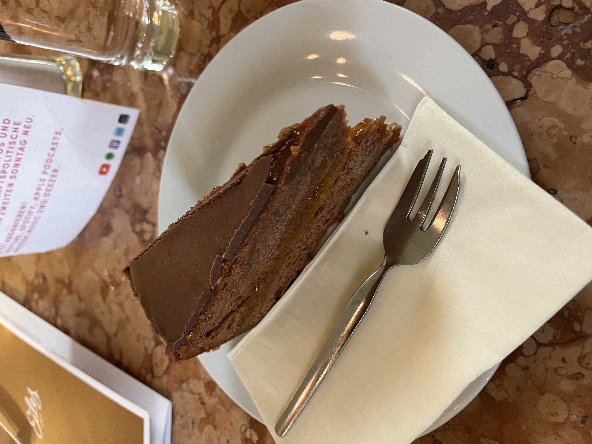
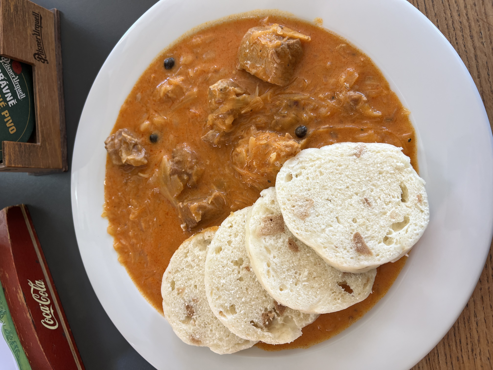

Strawberry Tres Leches cake. So good and refreshing, enough said. Found at "Luv 'em Leches"!
Yummy Buffalo Lemon Pepper Catfish. Came with hush puppies and cajun fries as well, so worth the 15.99. They asked me if I wanted any sauces (for free) after as well! So thats a plus imo. Found at "Little New Orleans".
Denmark:

Danish hot dog. Fried onions, raw onions, remalaude, and pickles. Life changing if you're into dogs.

Gochugang chicken at "Wagamama" at Tivoli Gardens. So delicious I ate it all. My friend got bolgogi beef w/ soba noodles and it was just as good tbh. Not a bad price for Tivoli as well.
One of my best finds by accident. At "Bagelicious", found in a cute part of CPH called Norrebro. The owner was so nice and explained the concept and offered me free lemon water to fill my bottle. They had a byob type bar ranging from hummus, to pesto chicken, brie, etc. I got a chili cheddar bagel that they press and filled with herb cream cheese, tandoori chicken, lto, cucumber, and their house sauce that you know I had to get. 10/10, forced me to figure out how to use word wrap for css.

The moment you (I) have been waiting for. I went to "Buka" and got their famous pistacio crossiant. I have to say it was pretty good and met my expectations. The first picture is their special of the day which was a citrusy cheeecake pastry. Both were super flakey and delicious but the special of the day may have been my favorite, despite being nearly impossible to cut into.
At "Vanlose Bistro" I got the special of beef stroganoff. My god this was so good, as you can tell I wasn't thinking to take a picture, and its not the prettiest. Anyway the sides were just as good. A scalped potato stack, fennel with cesar, blueberries, and dill, soy broccoli with peanuts, and salad with mustard dressing and buckwheat. Back to the stoganoff to say it was so rich and the beef was nice and tender, probably the best meal yet.
Finally got to try the Danish classic of "open faces sandwiches". I got the danish meatball option and honestly pretty good! I don't usually love cold food however this was nice and refreshing.
One of the food destinations featured on "The Bear" (great show by the way). This place is called Poulette and unfortunately it does live up to the hype. This was the best chicken sandwich I've had. Strikingly crispy, perfectly spicey, and the pickles were a great addition, also crunchy. An expensive sandwich but worth a try.
Sweden:
A very yummy and rich feta and spinach pie, with cured ham. Found at Malmo Castle, Restaurant Wega!
Budapest:
A Hungarian classic, Chicken Paprikash. This was very good and simple, I can see why it is a staple. The cream added a nice touch.
Had to get Hungarian Goulash and it did not dissapoint. This was like a beef stew with little gnocchi pieces. Warm, delicious, and flavorful.

A Hungarian Breakfast. Very good, though I am not usually a fan of bacon but it was pretty good for contrasting with the rich tomato sauce. One of the best breakfasts I have had in a while.
Vienna:
I asked the waitor what his favorite Austrian dish was and he pointed me in the right direction. This was like a rich carbonara-like pasta with fried onions on top, which were a beautiful touch. The dish was HUGE and so worth the money since I used it for two meals. Very satisfied.

A classic Viennese dessert called Sachertorte, a rich chocolate cake with apricot jam filling. I am not usually a fan of chocolate cake, but I know this could've been an exeception. Perhaps it is the place I ordered from but I was mildy dissapointed. The cake was kinda dry, and I think it would have been good served with some creme to break up the monotony. Regardless still a great dessert, just not worth the hype.
This is probably a tourist trap I fell for, however the dubai chocolate cinnamon roll caught my eye. Honestly, it was really good. The crunches were nice and it was pretty sweet but not overwelming. I have fallen victim to the trends and I am okay with it.
Prague:

More goulash but Czech style obviously. This was good in a different way. I love the bread dumplings and the meat was super tender. I maybe liked this better than Hungarian goulash? Maybe.
This may have been one of the best things I've had in Europe. Korean fried chicken, and we got classic Yang-Nyem, Garlic Chili, and Sweet Cheese. Not only was this chicken insanely flavorful and crispy, but it was also very cheap and it came with great company (Sarah)! Nothing more I could ask for.
Berlin
I was pretty excited about the innovation of this place, but sadly dissapointed. I got the waitors recommendation, a beef patty on a bao bun. The bottom was immediately soggy, and the patty was just too large, and despite that, they still managed to pile on a shit ton of onions which just made it even more impossible to eat. Flavors were good, just not worth the money I paid.
Another hot spot, Wen Change hand pulled noodles. Yeah this was really good, tender meat, plenty of chili oil and garlic, and perfectly spicey. I was happy with this meal, it was just an insane price. Still debating if it is worth the cost but regardless super delicious.
Chicken Katsu Curry is one of my little sisters favorite dishes and I understand why. This was pretty good and fresh. I still think it doesn't compare to when it is homemade, and maybe I am biased because I like when there are potatoes and carrots. My friend Sarah made very delicious Katsu Curry and so does my dad so I am spoiled.
Berlin classic, Doner Kebab. It is hard to catch the best doner because there are so many spots but I think I chose wisely. This was flavorful, cheap, and I love how they add spices on top and let you pick from one of four sauces, and I of course chose garlic.The picture honsetly doesn't do it justice. They sold Baklava too and I wish I got some ugh!